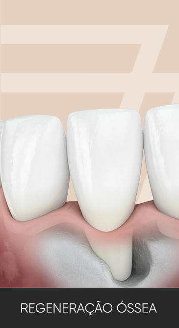

Especialidade em destaque

01 · Regeneração óssea
Fatores de crescimento para reconstruir a estrutura óssea
O Instituto Zétola trabalha com fatores de crescimento em regeneração óssea — o BMP (proteína osteoformadora recombinante humana) e o RIGENERA (micro-fragmentador de enxerto autólogo) — como alternativa ao enxerto de área doadora, com cirurgias minimamente invasivas.
Segundo o próprio Instituto, essa é a técnica com a qual o Dr. André Zétola acumula uma das maiores casuísticas do mundo, com taxa de sucesso declarada em torno de 90% — dado publicado pela clínica, reproduzido aqui como afirmação própria do Instituto.